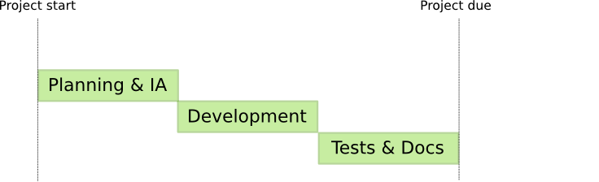
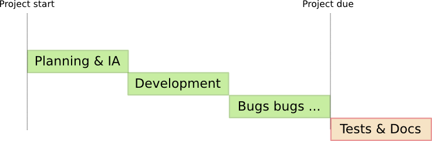

Outside in development with BDD and Rails
Malcolm Locke
Wholemeal Ltd
What's BDD?
- Behaviour Driven Development
- An extension of TDD ...
What's TDD?
- Test Driven Development
- Write a failing test
- Make it green
- Rinse and repeat ...
Typical project plan

Typical project reality

Rails functional test
class ArticlesControllerTest < ActionController::TestCase
test "should create an article" do
assert_difference 'Article.count', 1 do
post :create, :article => @valid_article_attrs
end
assert assigns(:article)
assert_redirected_to article_path(assigns(:article))
end
end
What's BDD?
- Behaviour Driven Development
- Write a failing behaviour in natural language
- Make it green
BDD Feature
Scenario: Create an article
Given I have no articles
And I am on the list of articles
When I follow "New article"
And I fill in "Title" with "Spuds"
And I fill in "Content" with "Delicious potato wedges!"
And I press "Create"
Then I should see "New article created."
And I should see "Spuds"
And I should see "Delicious potato wedges!"
And I should have 1 article
Feature
- 1 file per user story, e.g.
features/manage_articles.feature
Feature
Feature: Manage articles
In order to make a blog
As an author
I want to create and manage articles
Scenario
Scenario: Some requirement
Given some preconditions
And some other preconditions
When I do some stuff
And some other stuff
Then something happens
And something else happens
Outside in
features/manage_articles.feature
Scenario: Articles list
Given I have articles titled Pizza, Breadsticks
When I go to the list of articles
Then I should see "Pizza"
And I should see "Breadsticks"
Outside in
#1 Given I have articles titled Pizza, Breadsticks
$ rake cucumber
Using the default profile...
U---
1 scenarios (1 undefined)
4 steps (3 skipped, 1 undefined)
You can implement step definitions for undefined
steps with these snippets:
Given /^I have articles titled Pizza, Breadsticks$/ do
pending # express the regexp above
# with the code you wish you had
end
Outside in
#1 Given I have articles titled Pizza, Breadsticks
features/step_definitions/article_steps.rb
Given /^I have articles titled (.+)$/ do |titles|
titles.split(', ').each do |title|
Article.create!(:title => title)
end
end
Outside in
#1 Given I have articles titled Pizza, Breadsticks
$ rake cucumber
Using the default profile...
F---
(::) failed steps (::)
uninitialized constant Article (NameError)
./features/step_definitions/article_steps.rb:3
Outside in
#1 Given I have articles titled Pizza, Breadsticks
$ ./script/generate model article title:string body:text
$ rake db:migrate
Outside in
#2 When I go to the list of articles
$ rake cucumber
.F--
(::) failed steps (::)
Can't find mapping from "the list of articles" to a path.
Now, go and add a mapping in features/support/paths.rb
(RuntimeError)
Outside in
#2 When I go to the list of articles
features/support/paths.rb
module NavigationHelpers
def path_to(page_name)
case page_name
when /the home\s?page/
'/'
when /the list of articles/
'/articles'
end
end
Outside in
#2 When I go to the list of articles
$ rake cucumber
.F--
(::) failed steps (::)
No route matches "/articles" with {:method=>:get}
(ActionController::RoutingError)
Outside in
#2 When I go to the list of articles
config/routes.rb
ActionController::Routing::Routes.draw do |map|
map.resources :articles
end
Outside in
#2 When I go to the list of articles
app/controllers/articles_controller.rb
class ArticlesController < ApplicationController
def index
end
end
Outside in
#2 When I go to the list of articles
$ rake cucumber
.F--
(::) failed steps (::)
Missing template articles/index.erb in view path app/views
(ActionView::MissingTemplate)
Outside in
#2 When I go to the list of articles
app/views/articles/index.html.erb
<h1>Articles</h1>
Outside in
#3 Then I should see "Pizza"
$ rake cucumber
..F-
(::) failed steps (::)
expected the following element's content to include "Pizza":
Articles (Spec::Expectations::ExpectationNotMetError)
./features/step_definitions/web_steps.rb:145:in
`/^(?:|I )should see "([^"]*)"$/'
features/manage_articles.feature:9:in
`Then I should see "Pizza"'
Outside in
#3 Then I should see "Pizza"
app/views/articles/index.html.erb
<h1>Articles</h1>
<ul>
<% @articles.each do |article| %>
<li><%=h article.title %></li>
<% end %>
</ul>
Outside in
#3 Then I should see "Pizza"
$ rake cucumber
.F--
(::) failed steps (::)
You have a nil object when you didn't expect it!
You might have expected an instance of Array.
The error occurred while evaluating nil.each
(ActionView::TemplateError)
On line #3 of app/views/articles/index.html.erb
1: <h1>Articles</h1>
2: <ul>
3: <% @articles.each do |article| %>
4: <li><%=h article.title %></li>
5: <% end %>
6: </ul>
Outside in
#3 Then I should see "Pizza"
app/controllers/articles_controller.rb
class ArticlesController < ApplicationController
def index
@articles = Article.all
end
end
Outside in
It's
green!
$ rake cucumber
....
1 scenario (1 passed)
4 steps (4 passed)
0m0.034s
Problems
- Oh my gosh, it's slow
- Happy path
- Javascript
- No access to controller internals
Summary
- Executable, verifiable documentation
- A replacement for Rails integration tests, but not functionals or units
- A common ground between you and your customer